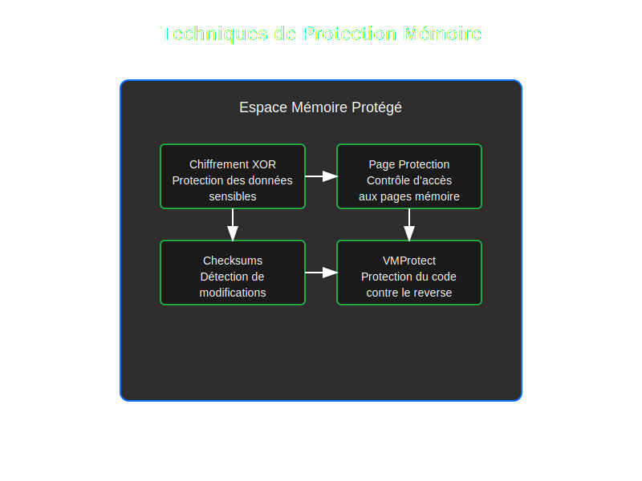
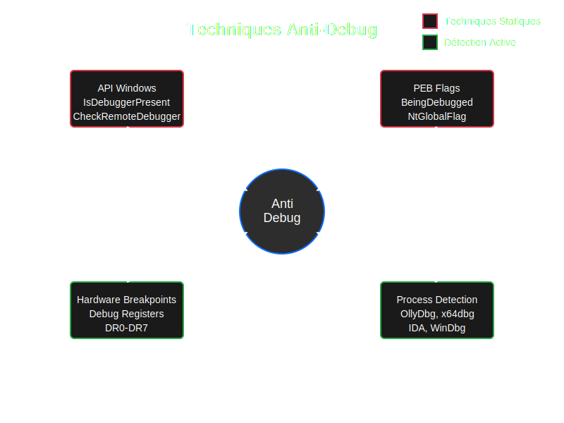
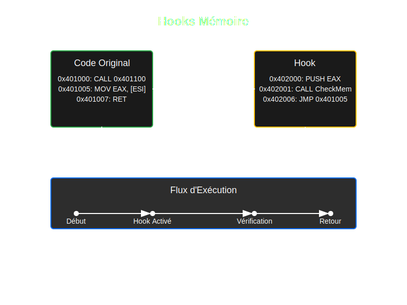

Protection Mémoire et Anti-Debug Avancé
Introduction
Dans cette deuxième partie, nous plongeons dans les techniques avancées de protection mémoire et de détection de débogage. Ces techniques sont essentielles pour protéger efficacement vos jeux contre la triche.
Protection Mémoire

Techniques de Base
- Modification des protections de page
- Chiffrement en mémoire
- Vérification d'intégrité
Techniques Avancées
- Pages Guard
- Hooks mémoire
- Protection multicouche
// Exemple de protection mémoire
DWORD oldProtect;
VirtualProtect(address, size, PAGE_GUARD | PAGE_READWRITE, &oldProtect);
Techniques Anti-Debug

Détection de Débogueur
- API Windows
- PEB (Process Environment Block)
- Breakpoints Hardware
Contre-Mesures
- Obfuscation
- Anti-tampering
- Détection en temps réel
// Exemple de détection de débogueur
bool isBeingDebugged() {
return IsDebuggerPresent() ||
CheckRemoteDebuggerPresent(GetCurrentProcess(), nullptr);
}
Hooks Mémoire

Types de Hooks
- IAT Hooks
- Inline Hooks
- VTable Hooks
Implémentation
- Trampolines
- Protection des hooks
- Gestion des exceptions
// Exemple de hook inline
void* CreateInlineHook(void* target, void* hook) {
unsigned char* trampoline = AllocateTrampoline();
// Code du hook...
return trampoline;
}